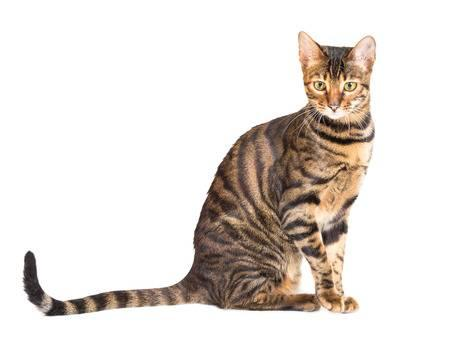

Se creó gracias a unos criadores de California que decidieron cruzar gatos bengalíes con gatos cuyo patrón de pelaje fuera tabby o mackerel más marcado y definido, es decir, con las rayas típicas de los tigres. De esta forma, en 1980 apareció la primera camada de gatos toyger, cachorros que parecían pequeños tigres a simple vista pero que, por supuesto, eran gatos con un pelaje que imitaba al de los felinos salvajes.
Musculoso y fuerte, de extremidades sólidas y largos dedos, así son los gatos toyger. Estos rasgos permiten que estos felinos puedan lucir un aspecto más “salvaje”, haciendo que las similitudes con los tigres sean mayores. Se trata de gatos de tamaño mediano, que acostumbran a pesar alrededor de 6 kg y a cuya esperanza de vida ronda los 15 años. La cabeza de un toyger ha de ser de forma redondeada, enmarcando unos expresivos y redondos ojos de colores muy vivos y profundos, que también recuerdan a los de un tigre. Esta cabeza está rematada por unas orejas redondeadas y de pequeño tamaño. El hocico es más prominente que en otras razas, siendo en algunos ejemplares realmente similar al del tigre: más ancho y marcado. Siguiendo con las características del gato toyger, las patas se muestran ligeramente más cortas en proporción a la longitud del cuerpo, pero más fuertes y robustas. Una curiosidad de esta raza reside en la longitud de sus dedos, puesto que es mayor que en el resto de razas de gatos. Ahora bien, si hay algo que realmente caracteriza al gato toyger y hace que destaque sobre el resto de gatos domésticos eso es su pelaje, por ello es conocido como "gato tigre". El manto de esta raza muestra un patrón de color igual que el del tigre, totalmente rayado. El color aceptado en esta raza es el naranja de base con rayas más oscuras, que pueden ser marrones o negras. En cuanto a la longitud, se trata de un pelo corto, suave y brillante.

Son extremadamente mimosos y adoran que se les presten todas las atenciones posibles. Por ello son gatos idóneos para la vida en familia, compartiendo su hogar con niños, personas mayores u otros animales. Además tienen un temperamento equilibrado, son juguetones y curiosos, pero no nerviosos. Se adaptan perfectamente a la vida en apartamentos y pisos, sin importar el tamaño de los mismos. Dada su curiosidad, son felinos relativamente fáciles de entrenar, pues su propensión a la actividad y su inteligencia propician un aprendizaje rápido y efectivo. Así mismo, aunque no son gatos que precisen realizar mucho ejercicio físico, sí que necesitan practicar cierta actividad diaria debido a su carácter juguetón y sociable. En este sentido, cabe resaltar que no son gatos que toleren la soledad ni vivir en hogares en los que no reciben las atenciones que necesitan. Por estos motivos, no los gatos toyger no son adecuados para personas que pasan muchas horas fuera de casa o no disponen del tiempo suficiente para jugar con su minimo.

será necesario que lo alimentemos con un pienso de buena calidad o una dieta casera correctamente elaborada, que le proporcionemos el suficiente tiempo de juego y ejercicio, lo cual podemos hacer jugando con él o preparándole diferentes juguetes con los que pueda entretenerse cuando esté solo. Recuerda que este tiempo en solitario no debe ser demasiado largo o el animal podría desarrollar ansiedad por separación. Como en cualquier raza felina o gato mestizo, un adecuado enriquecimiento ambiental es parte de los cuidados del gato toyger. Así pues, tanto si es cachorro como si es adulto, es preciso adquirir rascadores, juguetes, colocar baldas en casa y ofrecerle una cama cómoda para dormir, así como un arenero que le guste y le haga sentirse cómodo. En lo que respecta al pelaje, al ser corto y de fácil peinado bastará un cepillado semanal para mantenerlo acondicionado y evitar la formación de bolas de pelo, que son potencialmente peligrosas para el aparato digestivo de este animal

Por el momento, no se han registrado patologías propias de raza toyger, aunque para evitar que nuestro gatito caiga enfermo hemos de tomar las medidas oportunas.